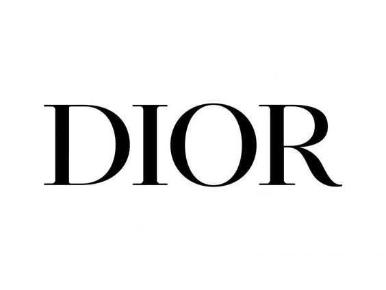
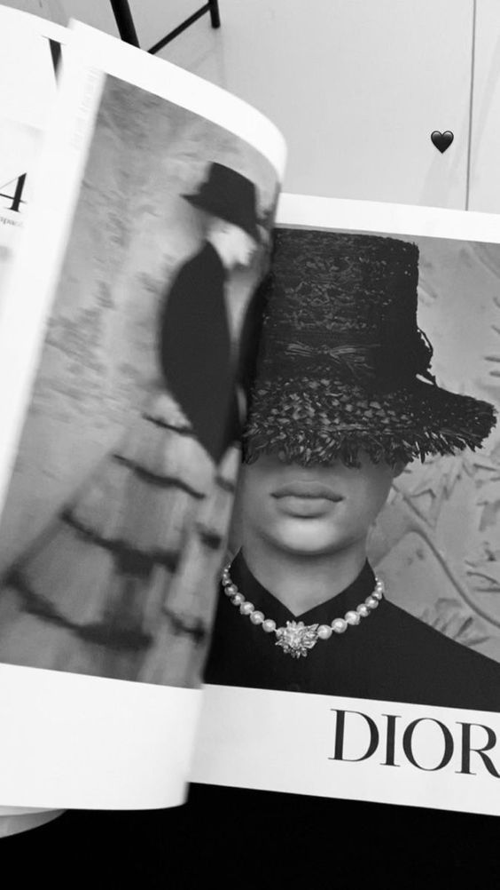

DIOR
Chistian Dior presento su primera coleccion tras la II Guerra Mundial
y fue toda una revolucion,el marco un antes y un despues en la
historia de la moda.El logo de Dior empezo con la presentacion
del famoso New Look en el 1947 y continuo con el estampado pata
de gallo,el cannage o las flores,todo estos elemento componen
ADN de la firma.
PRENDAS MAS POPULARES
- THE NEW LOOK
- TEXTURA ATEMPORAL
- LA BOLSA DE UNA PRINCESA
- SADDLE UP
- EL ELIXIR DORADO

DIOR
TALLAS
| XXS/XS |
XS/S |
S/M |
| M/L |
L/XL |
XXL |
PRENDAS MAS VENDIDA
- Dior Book Tote mediano
- Dior Book Tote mini
- Zapato de salón slingback J'Adior
- Vestido cruzado de largo medio
- Vestido acampanado de largo medio
Una decada le basto a Christian Dior para revolucionar toda
la industria y dejar su huella.Tras su repentino fallecimiento fue
su pupilo Yves Saint Laurent quien lo sustituyo y el legado de la
firma continuo con otros directores creativos como Marc Bohan,
Gianfranco Ferre, John Galliano, Raf Simons y Maria Grazia Chiuri.